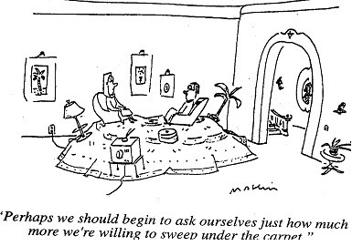
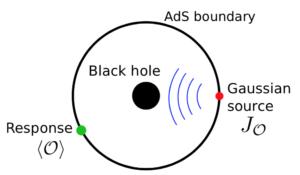
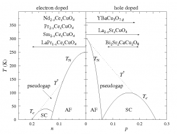

quantumofgravity
Home
Blog
About
Research
Blog
Latest posts from the archive.
My Life: A Personal Account (Part 2)
This is the second in a series of posts detailing my personal battle against depression from the early teenage years uptil the present day. The first post can be found here.
Dec 27, 2024
The “Rediscovery” of Spin Networks and Loop Quantum Gravity
Its hard to describe the frustration and anger I feel to see all these papers talk about “tensor networks” and geometry as if they are discovering something new which wasn’t…
Feb 10, 2024
Battling Depression: A Personal Account (Part 1)
Depression is a terrible disease. What amplifies its debilitating effect is its invisibility. There are no physical symptoms apparent to the external observer. In the…
Feb 3, 2023
Criteria for a Theory of Quantum Gravity
In an upcoming blog post I will outline a proposal theory of quantum gravity based upon the positive Grassmannian based upon my work with my student Devadarshini Suresh. It…
Dec 28, 2021

Complexity and Classicality
Earlier this summer I had the good fortune to be able to attend an (online) workshop on information and complexity. One of the most fascinating talks was by Scott Aaronson…
Aug 30, 2020
``Loop Quantum Gravity is Dead … ’’
... is a phrase that many high energy theorists, especially those of the stringy persuasion, long to hear. Fortunately, to borrow a phrase from Mark Twain, reports of the…
Jun 23, 2020
This Year-ish in Theoretical Physics
The previous episode of “this week-ish” was posted on June 5. Its been six months since then. I guess its time to post another volume but to be fair the title of this post…
Dec 31, 2019
Specific Heats of AdS Black Holes and Quantum Geometry
In
(Johnson 2020)
, Clifford Johnson makes yet another contribution to the study of black holes in anti-deSitter spacetimes or AdS black holes, for short. In this work he…
Aug 25, 2019
This Week-ish in Theoretical Physics
Surely it is hubris on my part to presume to co-opt the title of the venerable online column “This Week’s Finds in Mathematical Physics” written for nearly seventeen years…
Jun 5, 2019
Implementing Quaternions in Julia
Julia is making waves in the scientific programming community as
the
language to learn if you truly want to be a computational code ninja. I won’t list out all the features…
May 18, 2019

On the Compactness of Anti-deSitter Space
In my last post, on the IAGRG30 Conference held at BITS Hyderabad, I had mentioned how during my talk I was corrected by Amitabh Virmani on a seemingly technical point. My…
Mar 13, 2019
IAGRG30 - Kepler, Maldacena, Ashtekar and all that …
I was recently in BITS Hyderabad
1
attending the 30
th
meeting of the Indian Association for General Relativity and Gravitation (IAGRG30). I was pleasantly surprised that my…
Feb 11, 2019
Comment on "A Post-Quantum Theory of Classical Gravity"
Sometime ago Jonathan Oppenheim, one of the brightest minds
(Michal Horodecki, Oppenheim, and Winter 2005; Oppenheim 2010; Oppenheim and Wehner 2010; Michał Horodecki and…
Feb 1, 2019
Cosmological Curvature and the Planck Scale
While reading up on anti-deSitter spaces in
(Bengtsson 2008)
, I encountered the following quote attributed to Gauss by the author:
Jan 30, 2019
DAE-HEP 2018 - Preons, Fermions and All That
The 23
th
DAE-BRNS High Energy Physics Symposium was held at IIT Madras from Dec 10 - Dec 14. It was an interesting event. I met lots of very smart people. My abstract based…
Dec 28, 2018
Zotero vs Mendeley
There are two nice reference management apps out there with desktop and web versions: Mendeley and Zotero. Zotero is apparently the original open source version from which…
Dec 28, 2018

Shoucheng Zhang, 1963-2018
I never had the good fortune of meeting or personally knowing Shoucheng Zhang. Nevertheless he has had a profound influence on my academic career. As the world learned…
Dec 14, 2018
Negative Temperatures
The thermodynamic concept of temperature is defined by the following equation:
\(T = \frac{\partial E}{\partial S}\)
where
\(E\)
is the energy of the system and
\(S\)
is the…
Dec 1, 2018
Social Relevance of Quantum Gravity
Other
1
than all the other very good theoretical reasons for wanting a theory of quantum gravity, there are some very good
practical
reasons for wanting such a theory.…
Nov 17, 2018
The Planck Scale May Be Closer Than It Appears
Objects in the rearview mirror may be closer than they seem.
Oct 30, 2018
Euler's Homogenous Function Theorem
A homogenous function of order
\(n\)
satisfies:
\(\nf(\lambda x_1, \lambda x_2, \ldots, \lambda x_m) =\lambda^n f(x_1, x_2, \ldots, x_m)\n\)
For e.g.
\(\nf(x,y) = \sqrt{x} y^2\n\)
…
Oct 19, 2018
Euler's Theorem and the Smarr Relation
The area of a charged rotating (Kerr) black hole is given by
Oct 19, 2018
Plugins for Migrating Wordpress Installations
For anybody who manages a wordpress installation, a question that inevitably arises at some point or another is how to migrate their site from one hosting provider to…
Sep 22, 2018
How to kill a great platform
There are few things in life more disappointing than watching a beautifully crafted, socially responsible, disruptive technology platform self-destruct from the inside out.…
Sep 21, 2018
EVONET18 - Tensor Networks for One and All
So one month ago there was this wonderful workshop on “Optimising, Renormalising, Evolving and Quantising Tensor Networks” - or EVONET18 - organized by the Max Planck…
Jul 18, 2018
An Epidemic in India
A disease has spread throughout this great land of ours. To be sure, this disease is not new to us Indians. In some ways it has become part of our very national DNA. It has…
Jan 17, 2018
Theoretical Physicists in India
There are many research centers and researchers in India working in hep-th (High Energy Physics, Theory), gr-qc (General Relativity/Quantum Cosmology) and quant-ph (Quantum…
Jan 13, 2018
Competitive Nationalism and (the myth of) Islamic Homogeneity
Recently the Chief Minister of Karnataka, Mr. Siddharamaiah, made the following observation on twitter regarding the recent communally motivated murders in the Dakshin…
Jan 11, 2018
Herniated Disc Exercises
Found a really nice set of five simple exercises for treating herniated or bulging discs. The exercises are:
Sep 3, 2017
Fluctuation Dissipation in Quantum Gravity
In statistical mechanics we are mostly concerned with the statistical averages of various physical quantities when the system is in equilibrium. Fluctuation is a common…
Aug 9, 2017
Speeding up Wordpress
One common problem with wordpress sites is that they can seem sluggish compared to, lets say, sites built with static or single-file CMSs such as grav. There are several…
Aug 5, 2017
Spacetime Geometry as Information Geometry
In an entry to the 2013 FQXi essay contest and in an accompanying paper, Jonathan Heckman, a postdoc at Harvard, put forward a scintillating new idea - that one can derive…
Aug 16, 2015
Transcending Bad Sci-Fi
So I was watching “Transcendence”, the latest cinematic attempt to generate public hysteria about Artificial Intelligence (AI), or more specifically about
Hard
AI. I stopped…
Jul 12, 2014
Multiverse, multiverse, where art thou?
As I understand it, the multiverse concept arises as a consequence of the standard inflationary scenario which involves one or more scalar fields “rolling down” the side of…
May 12, 2014
The Measurement Problem, Part 1
The
measurement problem
becomes a problem only when we neglect to specify the nature of the observer’s Hilbert space. Postulates I (Systems are described by vectors in a…
Jul 5, 2013
Thermal Time and Kepler's Second Law
In a fascinating recent paper (arXiv:1302.0724), Haggard and Rovelli (HR) discuss the relationship between the concept of
thermal time
, the Tolman-Ehrenfest effect and the…
Feb 11, 2013
Some things … cannot be learned quickly
There are some things which cannot be learned quickly, and time, which is all we have, must be paid heavily for their acquiring. They are the very simplest things, and…
Jan 30, 2013
Elementary particles and quantum geometry
Black holes are formed due to the gravitational collapse of matter - ordinary matter, consisting of the particles and excitations of the Standard Model that we know and…
Jan 26, 2013
… and so it begins
Welcome to my blog, gentle readers. Here you will be exposed to all manner of speculation and conjecture on my part. Those with an enhanced sensitivity to non-rigorous…
Jan 26, 2013
No matching items